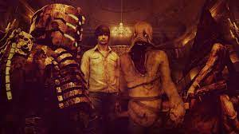
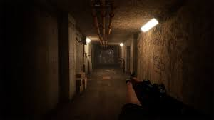
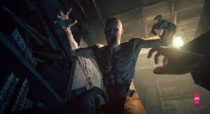

Tình trạng: CÒN HÀNG
Mã sản phẩm: 94761794
Thể loại: Action
188.000VNĐ
Mô tả
Chi tiết sản phẩm
Giới thiệu về game
Địa ngục là một thử nghiệm bạn không thể tồn tại trong Outlast, một trò chơi kinh dị sống còn đầu tiên được phát triển bởi các cựu chiến binh của một số thương hiệu trò chơi lớn nhất trong lịch sử. Là nhà báo điều tra Miles Upshur, khám phá Mount Massive Asylum và cố gắng sống sót đủ lâu để khám phá bí mật khủng khiếp của nó ... nếu bạn dám.
Ở vùng núi xa xôi của Colorado, những nỗi kinh hoàng chờ đợi bên trong Mount Massive Asylum. Một ngôi nhà bị bỏ hoang từ lâu vì bệnh tâm thần, gần đây đã được mở lại bởi chi nhánh “nghiên cứu và từ thiện” của tập đoàn xuyên quốc gia Murkoff, tị nạn đã hoạt động với tính bí mật nghiêm ngặt… cho đến bây giờ.
Hành động trên một mẹo từ một nguồn vô danh, nhà báo độc lập Miles Upshur đột nhập vào cơ sở, và những gì ông phát hiện đi một dòng đáng sợ giữa khoa học và tôn giáo, thiên nhiên và cái gì khác hoàn toàn. Khi ở bên trong, hy vọng duy nhất của anh trốn thoát nằm ở sự thật khủng khiếp ở trung tâm của Núi Massive.
Outlast là một kinh nghiệm sống còn kinh dị thực sự nhằm mục đích cho thấy rằng những con quái vật đáng sợ nhất của tất cả đến từ tâm trí con người.
Tính năng của game:
- Kinh nghiệm sống còn thật sự Kinh nghiệm: Bạn không phải là chiến binh - nếu bạn muốn tồn tại những nỗi kinh hoàng của sự tị nạn, cơ hội duy nhất của bạn là chạy ... hoặc ẩn nấp.
- Đồ họa nhập vai: Đồ họa chất lượng AAA mang lại cho người chơi một thế giới chi tiết, đáng sợ để khám phá
- Ẩn và lẻn: Trò chơi dựa trên tàng hình, với các yếu tố platforming lấy cảm hứng từ parkour
- Kẻ thù không thể đoán trước: Người chơi không thể biết khi nào - và từ đâu - một trong những cư dân đáng sợ của tị nạn cuối cùng sẽ bắt kịp họ
- Kinh dị thực tế: Thiết lập và nhân vật của Outlast được lấy cảm hứng từ những người tị nạn thực sự và những trường hợp điên rồ hình sự



Cấu hình
• Minimum:
o OS: Windows XP / Vista / 7 / 8 - 64 bits *
o Processor: 2.2 GHz Dual Core CPU
o Memory: 2 GB RAM
o Graphics: 512 MB NVIDIA GeForce 9800GTX / ATI Radeon HD 3xxx series
o DirectX: Version 9.0c
o Network: Broadband Internet connection
o Storage: 5 GB available space
o Sound Card: DirectX Compatible
o Additional Notes: * 32 bits systems are not officially supported, but should work if configured to provide 3Gb of user-mode address space. See http://msdn.microsoft.com/en-us/windows/bb613473 or http://steamcommunity.com/sharedfiles/filedetails/?id=175801311
 Trang chủ
Sản Phẩm
Đăng nhập
Trang chủ
Sản Phẩm
Đăng nhập